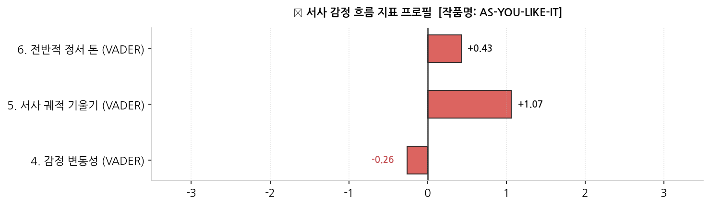
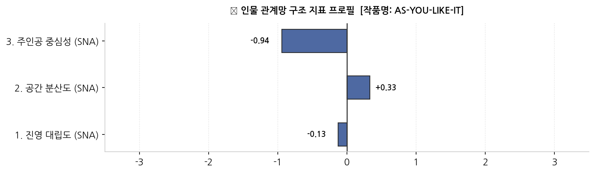
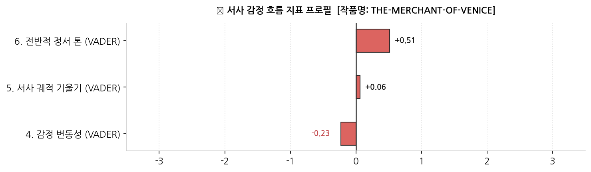
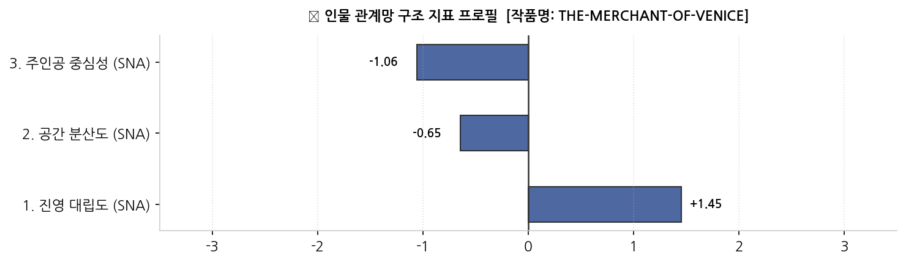
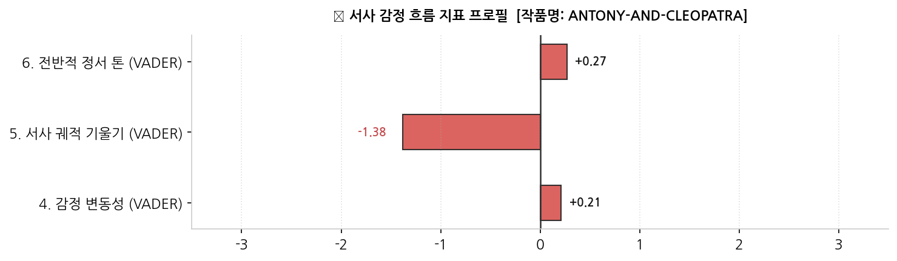
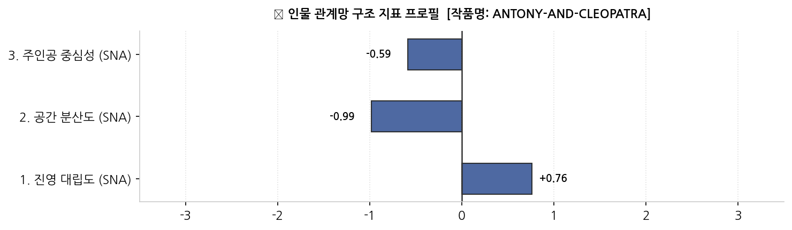
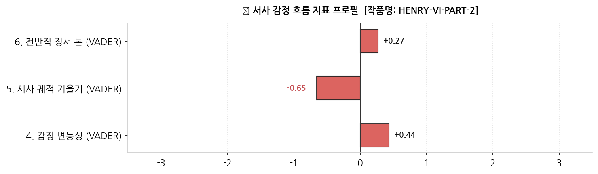
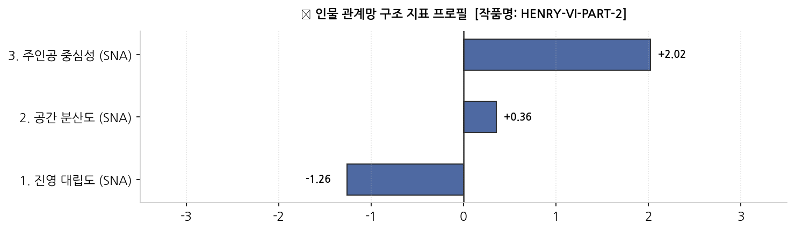

Lear, Lover, or Lunatic:
Mapping Shakespeare for the Streaming Library
PBL Module 2 정량 데이터 기반 추천 메타-장르 체계 구축 보고서
1. Introduction
본 프로젝트는 OTT의 방대한 라이브러리를 시청자 중심의 혁신적인 방식으로 큐레이션하기 위해 기획되었다. 기존의 단순한 장르 분류(액션, 로맨스 등)를 넘어, 인류 보편의 감정과 인간관계의 원형을 품고 있는 '셰익스피어 희곡 37편'을 기하학적 기준점으로 삼아 새로운 추천 시스템을 추천하고자 한다. 시청자가 스토리와 가장 깊게 교감하는 두 가지 핵심 요소인 '동적 감정 흐름과 정적 인물 관계망'을 인공지능 알고리즘으로 계량화하여, 전 세계 영화와 시리즈에 보편적으로 적용할 수 있는 4대 메타 장르 카테고리를 도출하였다.
2. Methodology
■ 디지털 인문학 툴의 한계와 코랩(Colab) 전환 배경
우리 팀은 초기 디지털 인문학 툴인 DraCor, Voyant Tools, Gephi를 활용해 데이터 패턴을 정성적으로 포착하려 했다. Voyant Tools 분석을 위해 제미나이(Gemini)와 협력하여 긍정/부정어 및 불용어 리스트를 고도화했으나, 텍스트 마이닝의 특성상 시간의 흐름에 따른 감정의 '동적 서사 궤적'(비극의 대폭락이나 희극의 대화합)을 반영하지 못하고 평면화되는 한계를 겪었다. 또한 Gephi의 시각화 레이아웃은 미세한 설정 변경에 따라 관계망 구도가 완전히 뒤바뀌어, 글로벌 플랫폼의 추천 코어에 필수적인 '객관성'을 확보하기 어려웠다. 무가공 데이터를 LLM에 직접 입력하는 방식 역시 알고리즘의 불투명성으로 인해 팀원들의 합의를 이끌어내지 못했다.
이러한 한계를 극복하고 시청자가 스토리와 교감하는 본질적인 규칙을 찾기 위해, 우리 팀은 구글 코랩(Google Colab)환경에서 shakespeare-sentiment explorer와 shakespeare-network explorer의 자료를 기반으로 인물 관계도의 시각적 구도 분석과 희곡 대사의 텍스트 감성 분석를 결합하여 [인물 관계 분석]과 [이야기 흐름 분석]을 독립적으로 수행한 후, 이를 하나로 융합하는 3단계 정량 데이터 파이프라인을 구축했다.
■ 1단계: 정적 인물 관계 분석
먼저 극 중 인물들이 맺고 있는 사회적 역학 관계와 갈등의 구조를 객관적으로 측정하기 위해, 희곡의 인물 관계도 이미지에서 시각적 데이터 특징을 추출했다.
- 진영 대립도 (가중치: 2.5): 인물 노드들의 HSV 색상 모델 대비 및 격자별 픽셀 밀도 연산을 통해 세력 간 팽팽한 이분법적 파벌 갈등의 강도를 측정했다.
- 공간 분산도 (가중치: 1.2): 노드 좌푯값의 표준편차 분석을 통해 군대와 국가가 움직이는 대하 사극의 광활한 스케일과 왕궁 밀실극의 폐쇄성을 판별했다.
- 주인공 중심성 (가중치: 0.8): 중앙 영역의 연결선 픽셀 밀도를 측정하여 극 전체가 원탑 주인공 한 명에게 종속되어 있는지, 아니면 다자간 군상극 구조인지를 분리했다.


■ 2단계: 동적 이야기 흐름 분석
인물 구조가 주는 정적인 긴장감에 더해, 시간이 흐름에 따라 관객이 느끼는 정서적 변화와 플롯의 역동성을 측정하고자 희곡의 타임라인별 감성 분석을 진행했다.
- 감정 변동성 (가중치: 1.5): 소설이나 연극의 사건 전개에 따른 감정 수치의 표준편차를 구하여, 인물들이 겪는 정서적 휘발성과 격정적 소동극의 유무를 연산했다.
- 서사 궤적 기울기 (가중치: 2.5): 1막 도입부와 5막 종결부의 정서 차이값을 계산하여, 전통적인 운명의 추락(비극)과 구원의 상승(희극)의 방향타를 고정했다.
- 전반적 정서 톤 (가중치: 1.5): 전체 타임라인의 평균 무드를 추출하여 작품 전체를 지배하는 냉소적이거나 밝은 대사 기조와 고유의 분위기를 판별했다.


■ 3단계: 최종 데이터 융합 및 몰림 현상 방어 전략
마지막 단계로 독립적인 두 분석 결과(인물 구조와 감정 흐름)를 하나의 공간에 결합하는 융합 분석을 단행했다. 컴퓨터 알고리즘은 인간 평론가와 달리 문학적 의미를 모른 채 오직 입력된 숫자 벡터로만 데이터를 이해하므로, 특정 지표의 단위가 너무 크거나 작으면 한쪽으로 분류가 완전히 쏠리는 데이터 몰림 현상이 일어난다. 우리 팀은 알고리즘이 두 데이터의 시너지를 온전히 반영하면서도 객관적인 장르 분리를 해낼 수 있도록 두 가지 방어막을 적용했다.
1. 지표별 체급 평등화: 먼저 전처리(StandardScaler)를 통해 6대 지표의 수치 단위를 평균 0, 분산 1의 표준 점수로 변환했다. 이로써 수만 단위의 구조 데이터와 소수점 단위의 정서 데이터가 동일한 영향력을 행사하도록 스케일링을 맞추었다.
2. 문학적 핵심 축의 가중치 튜닝: 체급을 맞춘 후, 셰익스피어 장르를 가르는 가장 결정적인 변별력인 [진영 대립도]와 [서사 궤적 기울기]에 각각 2.5배의 가중치를 곱했다. 이를 통해 단순 해피엔딩이나 단순 파벌 유무를 넘어 극의 깊은 문학적 에센스가 다차원 공간 상의 거리에 직접 반영되도록 설계했다.
■ 융합 분석의 최종 효과
이러한 데이터 융합 및 방어 전략을 통해 데이터들은 서로를 밀어내는 강력한 척력을 얻게 되었다. 인물 관계도와 이야기 흐름이라는 두 개의 렌즈가 결합하자, 결말만 해피엔딩이어서 희극으로 묶였으나 극 내내 치열한 상업적 대립과 법정 싸움이 오갔던 <베니스의 상인>이 순수 낭만 희극 군집에서 완벽하게 분리되는 등 셰익스피어 37편이 사분면 상에서 아주 깨끗하게 4대 유형으로 군집화되었다.


3. The Types
6차원 가중치 데이터 파이프라인과 군집 분석 알고리즘을 통해 도출된 셰익스피어 라이브러리의 4대 추천 카테고리 프로필은 다음과 같다. 각 유형 탭을 클릭하여 상세한 데이터 프로필과 추천 타겟, 시각화 지표 카드를 확인할 수 있다.
[Emotional Flow Profile]


본 타입의 감정 흐름은 극 후반부로 갈수록 정서적 만족도가 급격하게 상승하는 '구원과 대화합의 우상향 곡선'을 그린다. 이야기 중반부에는 인물들의 방랑이나 사소한 오해로 인해 감정 수치가 소폭 하락하거나 변동을 겪지만, 최종 막에 도달하면 오해가 풀리고 다중 결혼이나 화해 등의 이벤트가 발생하여 감정 톤이 최고점에 도달하게 된다. 전반적 정서 톤 평균이 매우 높고, 서사 궤적 기울기가 양(+)의 방향으로 가파르게 서 있어 시청자에게 깊은 심리적 안도감과 유쾌함을 선사한다.
[Character Network Profile]


인물 관계망 측면에서는 파벌 간의 적대 관계나 피비린내 나는 복수극이 철저히 배제된 '장벽 없는 개방형 구조'를 보여준다. 등장인물들이 출신이나 계급에 구애받지 않고 자유롭게 소통하며 관계를 형성하기 때문에, 네트워크 시각화 상에서 노드들이 팽팽하게 대립하지 않고 하나의 유기적이고 둥근 클러스터를 이룬다. 진영 대립도가 최하위권에 머무르며, 공간 분산도가 적절히 확보되어 전원(예: 아덴의 숲)을 배경으로 한 평화로운 인물 배치가 특징이다.
[Other Distinguishing Features]
셰익스피어 말기 작품인 <심벨린>, <겨울이야기>, <페리클레스>는 내용이 워낙 복잡하고 어두운 부분이 많아 이야기의 흐름과 인물 관계도를 분리하여 단독 분석했을 시에는 다른 종류의 비극이나 사극 군집으로 오분류되기 쉬웠다. 그러나 본 6차원 가중치 융합 모델에서는 이 작품들이 최종 막에서 보여주는 압도적인 '구원, 용서, 대화합'의 가파른 서사 궤적 기울기 덕분에 본 'As You Like It' 유형으로 완벽하게 분류되어, 데이터 융합 파이프라인의 문학적 변별력을 입증하는 대표적인 사례가 되었다.
[Works in This Type]
AS-YOU-LIKE-ITTWELFTH-NIGHTMIDSUMMER-NIGHTS-DREAMMUCH-ADO-ABOUT-NOTHINGLOVE-LABOURS-LOSTCOMEDY-OF-ERRORSTAMING-OF-THE-SHREWMERRY-WIVES-OF-WINDSORTWO-GENTLEMEN-OF-VERONATEMPESTWINTERS-TALECYMBELINEPERICLES
어필하는 시청자
- 하루 끝에 감정적으로 따뜻하게 마무리하고 싶은 사람
- 로맨스·우정·화합 서사를 좋아하는 시청자 (특히 20~30대 여성)
- 복잡한 갈등이나 비극 없이 캐릭터들의 관계가 성장하는 것을 즐기는 사람
- 가족이나 연인과 함께 보는 시청자
어울리는 시청 상황
- 주말 저녁 소파에서 편하게 볼 때
- 지치거나 스트레스받은 날 기분 전환용
- 연인·친구와 함께하는 무드 있는 영화의 밤
- 어린이·청소년도 함께하는 가족 시청
[Emotional Flow Profile]


본 타입의 감정 흐름은 신파적인 감정 과잉이나 극단적인 정서적 롤러코스터를 철저히 통제하는 '냉철하고 건조한 평행선'을 유지한다. 인물들이 눈물이나 분노에 휩쓸리기보다는 계약 조건, 법적 공방, 전략적 혼담 등 이성적이고 현실적인 계산하에 대사를 주고받기 때문에 전체 감정 변동성이 모든 유형 중 가장 낮다. 이야기 전반에 걸쳐 잔잔하면서도 팽팽한 정서적 긴장감(텐션)이 슬로우번(Slow-burn) 형태로 축적되며, 인위적인 정서적 상승이나 추락 없이 0점대 부근에서 횡보하는 독특한 장르적 분위기를 지닌다.
[Character Network Profile]


인물 관계망은 기독교 진영(안토니오와 친구들)과 유대인 진영(샤일록)이 칼날처럼 마주 보고 서 있는 '데칼코마니형 이분법 구조'를 띤다. 뚜렷하게 갈린 두 집단이 법정과 계약이라는 끈으로만 아슬아슬하게 연결되어 있어, 이미지 분석 시 진영 대립도 수치가 매우 높게 측정된다. 밀실극의 성격을 띠어 공간 분산도는 낮지만, 주도권을 쥔 인물들이 법정 중심부에 빽빽하게 모여 교류하므로 픽셀 밀도가 특정 구역에 고도로 집중되는 기하학적 형태를 보인다.
[Other Distinguishing Features]
이야기 흐름(VADER)만 독립적으로 분석했을 때는 샤일록이 법적으로 몰락하고 재판이 해피엔딩으로 끝나기 때문에 <베니스의 상인>이 <한여름 밤의 꿈> 같은 순수 낭만 희극(As You Like It 타입)과 결이 같은 것으로 해석되기 쉬웠다. 그러나 인물 관계망에서 추출된 극단적인 '진영 대립도' 변수와 결합되면서, 이 작품은 낭만 희극 군집에서 완벽하게 이탈하여 이성적 법정 공방과 사회적 갈등을 다루는 독자적인 'The Merchant of Venice' 카테고리를 형성하게 되었다.
[Works in This Type]
THE-MERCHANT-OF-VENICEMEASURE-FOR-MEASUREALLS-WELL-THAT-ENDS-WELLTROILUS-AND-CRESSIDATIMON-OF-ATHENS
어필하는 시청자
- 감정적 신파보다 지적·도덕적 긴장감을 즐기는 시청자
- 법정 드라마, 정치 스릴러, 사회 비판물을 선호하는 사람
- 선악이 명확하지 않은 복잡한 윤리 문제를 깊이 생각해보고 싶은 시청자
- 30~50대 직장인, 독서·토론을 즐기는 지식 탐구형 시청자
어울리는 시청 상황
- 끝난 뒤에도 한동안 생각과 여운이 깊게 남는 작품을 보고 싶을 때
- 인물 간 명분 싸움과 대사 처리의 긴장감이 중요한 작품을 선호할 때
- 가볍게 웃고 넘기는 콘텐츠보다 머리를 쓰면서 몰입하고 싶을 때
[Emotional Flow Profile]


본 타입의 감정 흐름은 거대한 역사적 소용돌이와 전쟁의 승패에 따라 정서가 요동치다가 결국 파멸로 내리꽂히는 '격정적인 자유낙하 곡선'을 그린다. 인물들의 감정 기복이 심해 표준점수 기반의 감정 변동성이 전 유형 중 압도적 1위를 기록하며, 1막의 찬란한 번영과 권세가 5막에 이르러 죽음과 몰락으로 반전되면서 서사 궤적 기울기가 마이너스(-) 방향으로 거대하게 급강하한다. 관객에게 엄청난 감정적 카타르시스와 깊은 비장미를 선사하는 플롯 구조다.
[Character Network Profile]


인물 관계망은 로마와 이집트라는 광활한 지리적 배경 위에 수많은 군상들이 흩어져 있는 '대하 장막형 와이드 구조'를 보여준다. 소수의 밀실 정치가 아니라 국가와 군대가 움직이는 거대한 스케일이므로, 시각화 지도상에서 노드들이 뭉치지 않고 넓게 퍼져 나가는 공간 분산도가 최고점을 찍는다. 특정 주인공 한 명에게 링크가 독점되지 않고 여러 장군, 사절, 군주들이 다발적인 관계선을 형성하는 군상극의 기하학적 형태를 띤다.
[Other Distinguishing Features]
인물 관계도(SNA)만 단독으로 봤을 때 <로미오와 줄리엣>은 등장인물 수가 적고 두 가문(몬태규/캡슐렛)의 갈등 구조가 구도상 단출하여 소규모 갈등극 카테고리에 머물러 있었다. 그러나 타임라인 감성 분석을 병렬 결합하자, 가문 간의 거대한 격돌 속에서 두 남녀가 겪는 '격정적인 정서 변동성'과 마지막 무덤가에서의 '파멸적 자유낙하 곡선(기울기 급강하)'이 동시 포착되었다. 이로 인해 스케일 중심의 사극들과 같은 차원축소 공간에 나란히 배열되며 'Antony and Cleopatra' 카테고리로 융합 분류되었다.
[Works in This Type]
ANTONY-AND-CLEOPATRACORIOLANUSJULIUS-CAESARROMEO-AND-JULIETHENRY-IV-PART-1HENRY-IV-PART-2HENRY-VRICHARD-IIKING-JOHNHENRY-VIIITITUS-ANDRONICUS
어필하는 시청자
- 스펙터클한 스케일과 웅장한 서사에 몰입하는 시청자
- 역사물·전쟁물·대하드라마 팬 (로마, 삼국지, 왕좌의 게임류)
- 비극적 결말이라도 감정을 크게 쏟아내는 카타르시스를 원하는 사람
- 운명적 사랑이나 영웅의 몰락 서사에 감동받는 시청자
어울리는 시청 상황
- 충분한 몰입 시간과 대형 화면 스케일을 살릴 수 있는 시청 환경
- 감정을 크게 쏟아내며 대형 카타르시스를 느끼고 싶은 날
- 사랑, 권력, 전쟁이 한꺼번에 몰아치는 대형 서사를 선호할 때
[Emotional Flow Profile]


본 타입의 감정 흐름은 외부의 환경 변화보다는 인물 내부의 의심, 독백, 광기가 소용돌이치는 '심리적 블랙홀 곡선'을 그린다. 주인공의 내면적 타락과 정신적 붕괴가 점진적으로 심화되면서 전체 텍스트의 정서가 아주 정교하고 서서히 하강 곡선을 그리며, 대사 속에 음모와 냉소적인 독백 텍스트 비율이 매우 높아 전반적 정서 톤 평균이 전체 카테고리 중 가장 낮은 음(-)의 영역에 고착되어 있다. 시청자에게 서늘한 심리적 몰입감과 지적 서스펜스를 유도한다.
[Character Network Profile]


인물 관계망은 광활한 전장 대신 왕궁 밀실이나 좁은 인간관계로 무대를 압축한 '원탑 주인공 중심의 독점적 허브 구조'를 띤다. 주변 인물들의 독자적인 관계망은 힘을 잃고 지워지며, 오직 주인공 한 명의 노드를 향해 모든 인간관계 링크가 거미줄처럼 집중되는 주인공 중심성 지표가 최상위권에 달한다. 이미지 중심부에 픽셀 밀도가 극단적으로 고정되어 있어 시각적으로 매우 응집력 있는 성채 형태를 보여준다.
[Other Distinguishing Features]
전통적인 문학 분류에서는 <햄릿>, <맥베스>, <리어왕>, <오셀로>를 '4대 비극'이라는 하나의 거대한 명사로 묶어 다루어 왔다. 그러나 본 6차원 가중치 융합 분석 결과 4대 비극 중 국가적 군대 이동과 광활한 방랑이 펼쳐지는 <리어왕>과 <오셀로>는 공간 분산도가 커서 'Antony and Cleopatra' 사극/대하극 군집으로 이동한 반면, 철저히 주인공의 내면적 광기와 밀실 정치 플롯에 의존하는 <햄릿>과 <맥베스>는 본 'Henry VI Part 2' 유형에 잔류했다. 이는 인공지능이 전통적 장르 구분을 해체하고 '시청자가 체감하는 심리적 무대 스케일'을 기준으로 작품을 재조립할 수 있음을 보여주는 쾌거다.
[Works in This Type]
HENRY-VI-PART-2HENRY-VI-PART-1HENRY-VI-PART-3RICHARD-IIIHAMLETMACBETHOTHELLO
어필하는 시청자
- 공포·스릴러 중 심리적 긴장과 서스펜스를 선호하는 시청자
- 왕권 다툼, 정치적 배신, 밀실 권력 암투극 마니아
- 주인공 1인의 고독한 심리 변화나 붕괴 과정을 추적하는 작품을 좋아할 때
어울리는 시청 상황
- 조명을 완전히 낮추고 혼자 고도로 깊게 몰입하는 늦은 밤
- 감정을 크게 소비하기보다 두뇌를 자극받고 싶을 때
- 시리즈 정주행을 통해 치밀하게 플롯의 인과관계를 따라가고 싶을 때
4. Reflection and Conclusion
■ 본 분류 체계가 계량화한 셰익스피어 희곡의 문학적 특성
본 연구의 융합 분류 알고리즘은 수백 년간 이어져 온 정성적인 문학 장르관을 데이터 과학의 영역으로 끌어내어 객관적으로 증명했다. 분석 결과, 셰익스피어 희곡의 정체성은 단순히 대사의 표면적 밝기나 등장인물의 숫자로 결정되는 것이 아님을 확인했다. 전통적인 장르론에서 하나로 묶이던 '4대 비극'이 단일 인물의 심리적 붕괴 수준과 공간적 스케일에 따라 군집 내 분열을 일으킨 현상이 이를 뒷받침한다. 즉, 셰익스피어의 작품들은 '파벌 갈등의 기하학적 대칭 구도'와 '서사 결말부의 정서적 낙폭'이라는 보이지 않는 두 축의 역학 관계 위에서 새로운 차원의 통합 장르 카테고리를 구축하고 있음을 한눈에 보는 데이터 분포 지도로 입증해냈다.
■ 시청자와 콘텐츠의 새로운 연결 방식 (큐레이션의 패러다임 전환)
기존 스트리밍 플랫폼의 추천 시스템은 '액션', '로맨스', '사극' 등 외형적 카테고리에만 의존하여 정작 시청자가 작품을 보며 느끼는 심리적 분위기를 반영하지 못했다. 그러나 본 연구가 제안하는 '셰익스피어 매핑 모델'은 시청자가 스토리에 몰입하는 본질인 '인물 관계의 긴장감'과 '정서적 카타르시스의 경로'를 직관적으로 관통한다. 시청자들은 자신의 실시간 무드나 시청 맥락에 따라, 감정의 구원을 원할 때는 As You Like It type을, 고도의 지적 결투를 원할 때는 The Merchant of Venice type을 선택하여 콘텐츠와 가장 심층적인 심리적 교감을 이룰 수있다.
■ 분석 방법론의 한계점 및 구체적인 보완 방안
한계:6대 지표의 군집화 과정에서 장르를 가르는 핵심 축(진영 대립도, 서사 기울기)에 부여한 가중치 수치(2.5)는 정교한 통계적 실험이나 사전 연구에 기반한 것이 아니라, 문학적 도메인 지식에 의존하여 임의로 설정한 측면에 가깝다.
보완 방안: 향후 실제 스트리밍 서비스 유저들의 '콘텐츠 시청 후 장르 만족도' 및 '클릭 로그 데이터'를 기준점으로 삼아, 인공지능이 역으로 최적의 장르 분류 가중치 값을 스스로 학습하고 최적화하는 '지도학습 기반 가중치 튜닝 알고리즘'을 도입하여 보완해야 한다.
한계: 정적 인물 관계망 분석 시, 극의 핵심을 쥐고 있는 인물을 추적하여 중심성을 계산한 것이 아니라 관계도 이미지의 기하학적 '화면 중앙 영역(Grid 1/4)'에 걸리는 픽셀 밀도로 주인공 중심성을 대체 계산했기 때문에, 실제 극의 중심인물과 이미지상의 중앙 좌표 간에 일부 오차가 발생할 수 있다.
보완 방안: 이미지 기반 스캔을 넘어 희곡 텍스트 원본에서 인물 명사를 추출하고, 대사 수와 등장을 기준으로 인물 간 링크를 직접 연결하는 '텍스트 기반 사회관계망 분석 모델'을 병렬 결합하여 물리적 화면 배치 오류를 원천 차단해야 한다.
한계: 대사 속 감정선 추적 방식 기반의 감성 분석이 일부 작품의 오타나 문장 부호의 영향으로 인해 초기 0.0점으로 수렴하거나, 대사 속 이면의 반어법, 풍자, 은유와 같은 고도의 문학적 뉘앙스를 포착하지 못하고 단순 긍정/부정 수치로 단순화한 한계가 존재한다.
보완 방안: 단순 사전 기반 감성 분석 체계를 고도화하여, 문맥과 문학적 비유를 더 깊이 이해할 수 있는 문맥 인식 기반의 인공지능 분석 알고리즘을 동적 서사 지표에 도입함으로써 대사 속에 숨겨진 냉소적 서브텍스트까지 정밀하게 수치화해야 한다.
■ 광범위한 스트리밍 라이브러리로의 확장 및 적용 방안
본 프로젝트에서 정립한 4대 장르 모델은 현대 스트리밍 플랫폼 내 수만 편의 라이브러리에 즉시 이식 가능하다. 영화 및 드라마의 영상 데이터에서 딥러닝 기반 이미지 인식 기술로 인물 간 스크린 샷 공동 등장 빈도를 스캔해 '인물 관계망'을 자동 생성하고, 자막 대사 파일에서 오디오 자연어 처리(NLP)를 통해 문맥 감성을 실시간 추출하면 모든 신작 콘텐츠의 '6차원 감정-구조 벡터'를 자동으로 연산할 수 있다. 이를 통해 AI가 작품 고유의 '감정-구조 지문'을 인식하여 정교한 초개인화 서사 매칭 큐레이션을 실현할 수 있을 것이다.
🔍 평가자 검증용 데이터셋 다운로드 패널
본 프로젝트의 신뢰도 검증을 위한 원본 데이터셋 및 분석 소스 일체입니다.
5. References
- Google Gemini.
- GoogLE Colab
- https://coolmintmild.github.io/shakespeare-sentiment/.
- https://coolmintmild.github.io/shakespeare-network/.